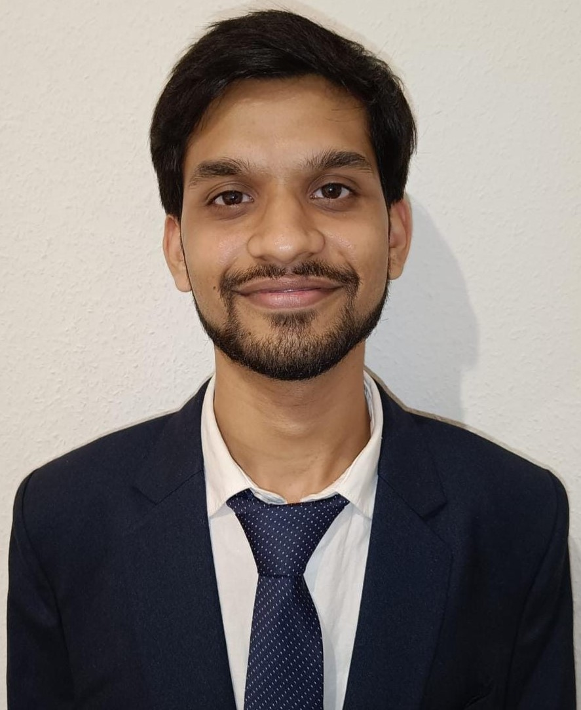

Karthik Bhat

Summary
Bachelor of Science in Computer Science at the Frankfurt University of
Applied Science. I am very interested in computer programming and software
Development.
Education
-
Frankfurt University of Applied Science, Frankfurt am Main
Bachelor Informatik (Oct 2023 - Present)
-
Goethe University, Frankfurt am Main
Bachelor Informatik (Oct 2021 - Oct 2023)
-
Landesstudienkolleg Halle an der Saale
(Jan 2020 - Feb 2021)
Work Experience
-
Working Student Data Processor - Deutsche Telekom GmbH
May 2023 - Jan 2024
-
Responsible for address validation using MS Excel for fiber optic
networks
- Documentation of addresses, database for addresses
- Support for the automation and innovation team
-
Using KeePass, I performed reboot procedures for several computers
in the event of unexpected failures
Skills
SQL | HTML | CSS | Python | Scrum | MS Office |
Volunteering
-
Volunteer - Consulate General of India, Frankfurt
-
Organized and volunteered of the Information Center for the
International Year of Millet.
-
Responsible for informing people about the uses and health benefits
of millet
-
Interviewed more than 30+ people about their views and opinions on
millet
-
responsible for clicking images and videos during the interview
-
Volunteer - Malteser "Cafe Digital"
-
Provided one-on-one assistance to elderly individuals encountering
technology challenges.
-
Guided them for common tech tasks, ensuring accessibility for all
skill levels.
Contact_Me